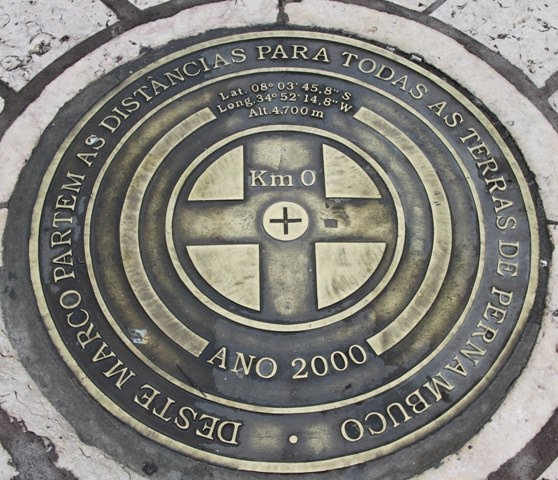

Marco Zero
A Praça Rio Branco, também conhecida como Marco Zero, é um espaço público localizado no bairro do Recife da cidade homônima, capital de Pernambuco. O local fica próximo ao Porto do Recife e abriga o Marco Zero da cidade do Recife. É deste marco que são feitas todas as medidas oficiais de distâncias rodoviárias locais

A mudança do piso também ocorreu, e hoje o Marco Zero está localizado no interior de uma rosa dos ventos gigante, com 10 metros de raio, obra de Cícero Dias, transformando o local em um símbolo do ponto inicial das estradas do Estado de Pernambuco e conferindo um novo valor à região. Ao redor estão dispostos edifícios de grande valor histórico, como a Bolsa de Valores e a Associação Comercial do Recife, o que valoriza o bairro e a torna a praça especialmente convidativa para turistas e moradores. Com o tempo, o Marco Zero de Recife não ficou consagrado apenas como um cartão de visita, mas também como um ponto de encontro da população, que tem ali a realização de diversos espetáculos, como o Ano-Novo, garantindo aos visitantes um show de luzes e apresentações, indo além da função simbólica.
-
